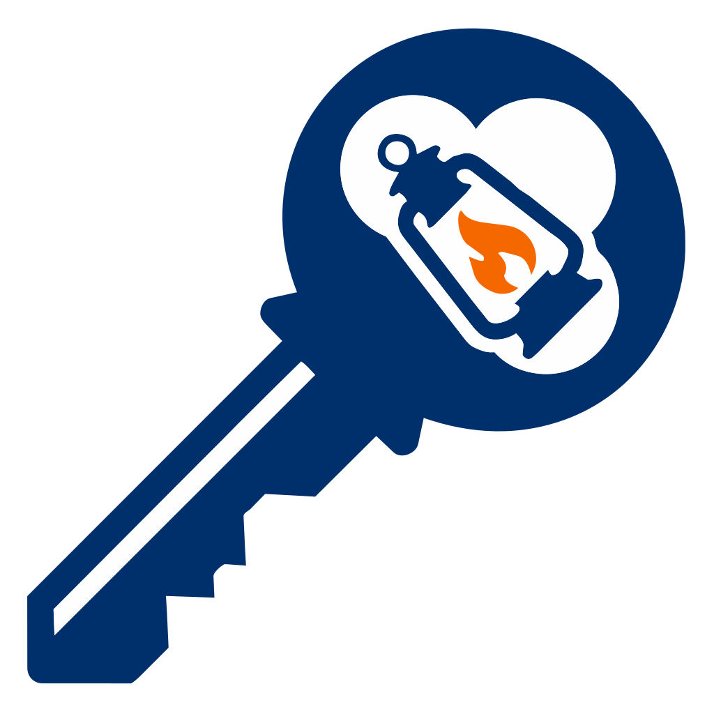

CSNYPass- 1 Login
- 2 Protection
- 3 Done
Sign in to school in one click.
Set up CSNYPass once and it fills your sign-in steps for you.
-
Fills your Blackbaud email
You type the password yourself. -
Signs you into OneLogin
Username and saved password. -
Encrypted on this device
Nothing is sent anywhere.
How it works
Works on Blackbaud: collegiateschool.myschoolapp.com
and OneLogin: csny.onelogin.com/login or /login2
You’re all set!
CSNYPass will fill your sign-in steps from now on.
- Pin it. Click the puzzle icon in your toolbar, then the pin next to CSNYPass.
- Need a break? Right-click a sign-in page to pause for an hour.
- Change anything later from the toolbar icon.
Saved settings couldn’t be read
Login automation may not work until you clear the saved data and set up again. You can do that from the settings page.